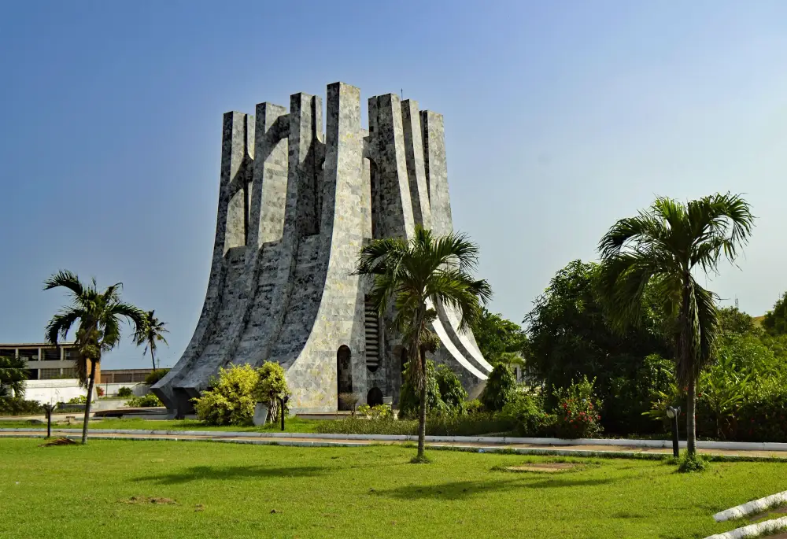

About Ghana
Ghana is a West African country on the Gulf of Guinea. Accra is the capital. This page answers the questions first-time travelers ask most often: what the culture feels like, what to eat, and which places are worth the trip.

Culture
Greetings matter. A short hello and a handshake, often with the right hand, open most conversations. In many homes, people offer water before they talk business.
Kente cloth, woven in bright strips, is worn at festivals, church, and ceremonies. Patterns are more than decoration. Families and communities connect certain designs with proverbs and status.
Festivals mark the year. Homowo in Accra remembers a historic famine with shared meals. Hogbetsotso in the Volta Region recalls the migration of the Anlo Ewe people. If your dates overlap a festival, go with a local host and follow their lead on dress and photos.
Chiefs still hold authority in many towns. A visit to a palace is a formal occasion. Cover your shoulders, ask before you enter a courtyard, and do not step over a chief's regalia or stools.
History
On 6 March 1957, Ghana became the first country in sub-Saharan Africa to gain independence from colonial rule. Kwame Nkrumah became prime minister and later president. Independence Day is still a national holiday, with parades in Accra and events in regional capitals.
The coast holds an older and harder history. Cape Coast Castle and Elmina Castle were used in the Atlantic slave trade. Both are UNESCO World Heritage sites. Guided tours walk through the dungeons and the Door of No Return. Plan quiet time afterward. These visits are educational, not entertainment.
Inland, the Asante kingdom shaped trade in gold and kola. Kumasi, the Asante capital, is the place to learn that story at Manhyia Palace Museum.
Food
Authentic meals are easy to find outside hotel restaurants. A chop bar is a local eatery serving the day's pots: stew, soup, rice, and starches. Look for busy lunch hours and food that is cooked in front of you.
Dishes to order:
- Jollof rice, tomato rice served with chicken, fish, or salad.
- Waakye, rice and beans, often with boiled egg, spaghetti, and shito pepper sauce.
- Banku or fufu with light soup, groundnut soup, or grilled tilapia.
- Red red, black-eyed peas in a palm-oil stew, usually with fried plantain.
- Kelewele, spiced fried plantain sold in the evening.
In Accra, Osu and the area around Makola Market are practical places to start. Ask for "small" or "large" so the portion matches your appetite. Tap water is not the usual choice for visitors. Drink sealed water, and wash fruit you buy on the street.
Destinations
These stops answer the question, "What should I actually see?" Use the filters on the home page if you want a shorter list by coast, nature, or history.
- Cape Coast Castle for the guided history tour and the fishing harbor beside the walls.
- Kakum National Park for the canopy walk, about an hour from Cape Coast.
- Labadi Beach for a relaxed Accra afternoon, especially on weekends.
- Manhyia Palace Museum in Kumasi for Asante royal history.
- Mole National Park if you can spare the travel north for elephants and a walking safari.
- Wli Waterfalls in the Volta Region, a village walk that ends at one of West Africa's tallest falls.
A first trip of seven to ten days can cover Accra, Cape Coast, and Kakum without rushing. Add Kumasi if you have a domestic flight or an extra two days by road.